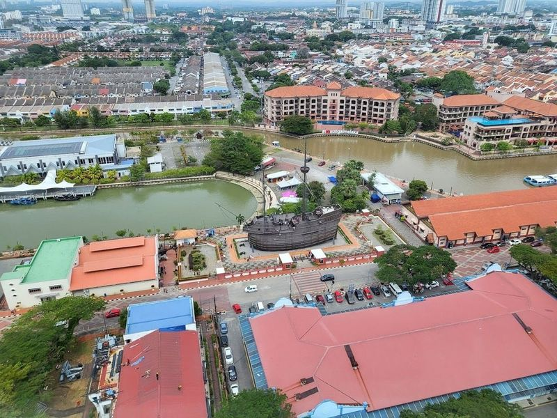
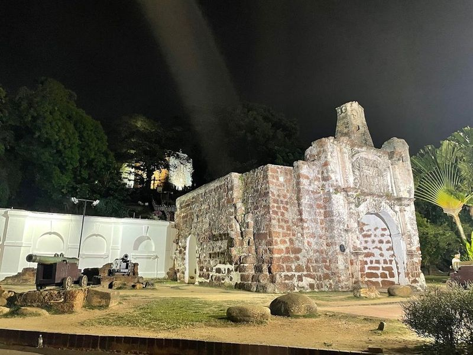
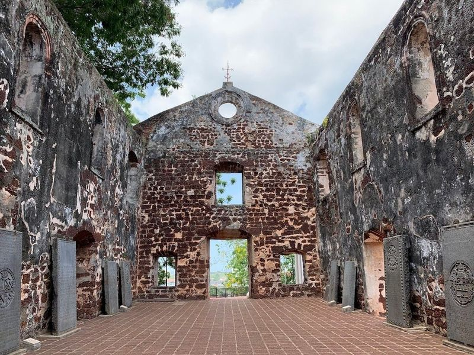
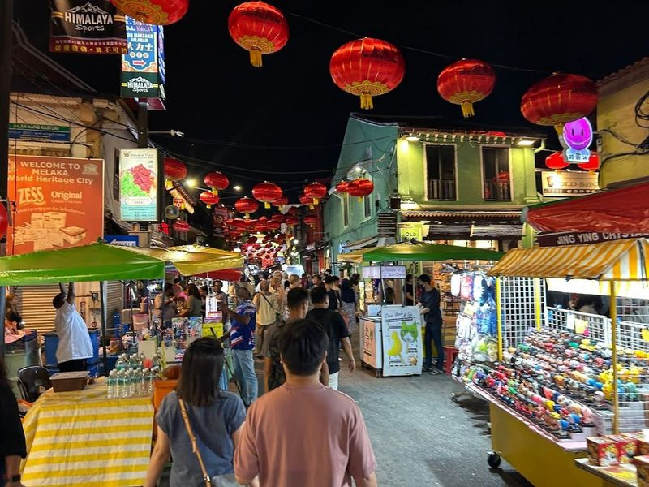
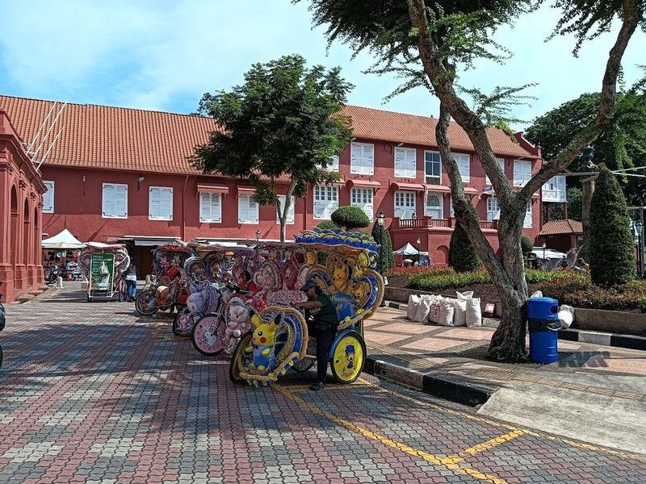
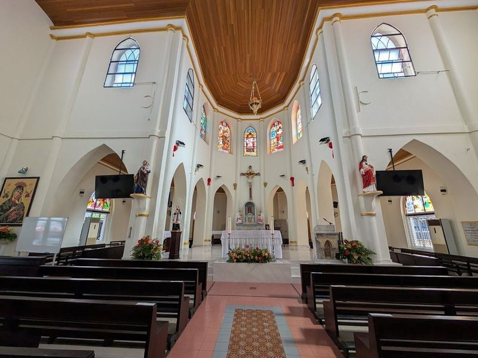
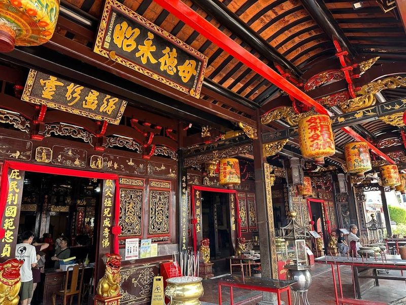
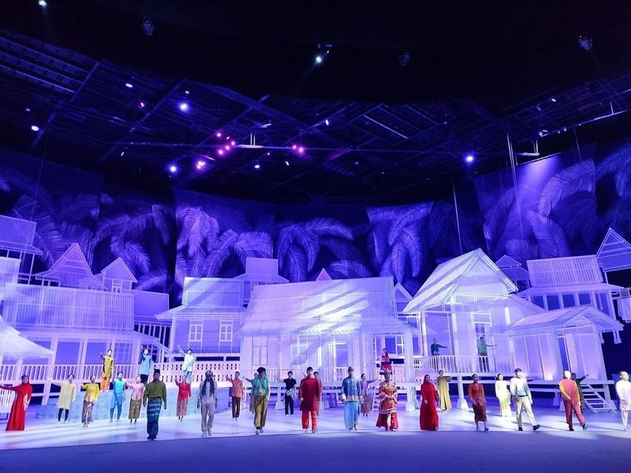
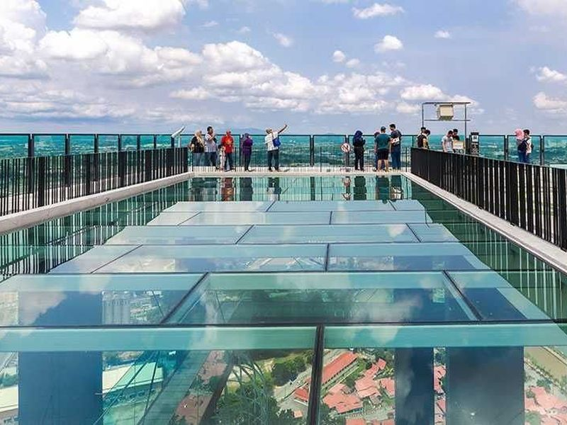
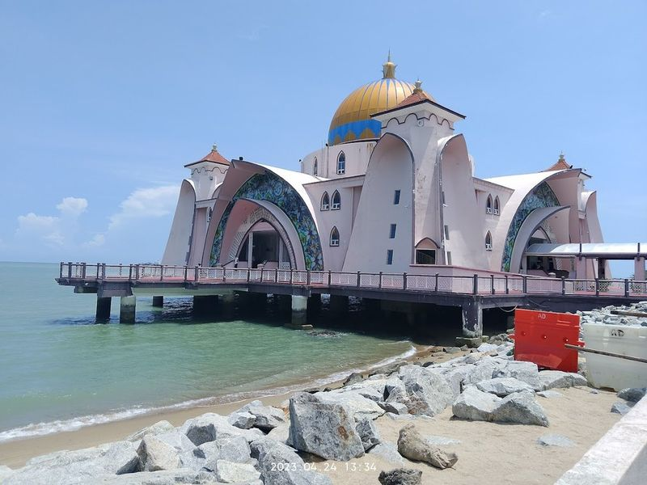

Explore Melaka
A Brief History
Melaka rose as a Malay sultanate port before Portuguese, Dutch, and British control of the Strait of Malacca. Stadthuys, Cheng Hoon Teng temple, and hillside St. Paul's ruins record how Southeast Asian spice trade attracted successive European and Asian merchant communities. Jonker Street night markets and riverside quays extend straits-trade memory along the Malacca River mouth.
Attractions Map
Top Sights & Activities

Menara Taming Sari
Experience the views of Melaka from the Taming Sari Tower (Malacca Tower), a modern structure with a rotating observation deck that rises to 80 meters. Whether you visit during the day or at night, be treated to a seven-minute ride offering panoramic vistas of the city. From St. Paul's Hill to Melaka River and beyond, this experience provides an opportunity to spot numerous landmarks.

A Famosa
A Famosa, a historic remnant of a Portuguese fortress in Melaka, is an intriguing destination for history enthusiasts and families alike. Once featuring impressive ramparts and the towering A Famosa keep, which stood at 60 meters tall until its destruction by the Dutch in 1641, this site now showcases some of the oldest European architectural remains in Southeast Asia.

Church of Saint Paul, Malacca
Church of Saint Paul, Malacca, is a historic site located on the summit of St. Paul's Hill. Originally built in 1521 by a Portuguese nobleman as an offering to the Virgin Mary, the church now stands in ruins with its roof gone and intricate tombstones belonging to Dutch noblemen. The site holds significance as it was constructed on the grounds of the last Malaccan sultan's palace and has witnessed various events throughout history.
The Huskitory
The Huskitory is a one-of-a-kind cafe that offers a unique experience for dog lovers. Visitors can cuddle and take photos with over 20 adorable Siberian huskies, as well as other breeds like the Samoyed and Akita. The cafe has a simple menu featuring cakes, crepes, snacks, and drinks at affordable prices. Guests can also interact with the well-trained dogs and even feed them if they wish.

Jonker Street Night Market
Jonker Street Night Market is a open-air market that transforms Melaka into a lively hub every weekend. This destination, just a short stroll from Casa Del Rio Melaka, showcases an impressive array of food stalls and souvenir shops. As you wander through the beautifully illuminated street adorned with Chinese lanterns, be captivated by the tantalizing smells of local delicacies and the colorful displays of handicrafts.

Dutch Square (Red Square) Melaka
Dutch Square (Red Square) Melaka is a historic square known for its maroon-colored Dutch colonial-style buildings. It's a must-visit attraction in Melaka, offering a glimpse into the city's rich heritage. Visitors can explore landmarks such as A Famosa, Chinatown, St. Paul's Hill, and take a river cruise to soak in the city's atmosphere. The square is an ideal starting point for exploring the area, with its unique architecture and historical significance.

Church of St. Francis Xavier Melaka
Nestled in the heart of Melaka, the Church of St. Francis Xavier stands as a example of Gothic Revival architecture, complete with two striking spires that draw the eye. Constructed between 1856 and 1859 by Father Farve on the site of an earlier Portuguese church, this Roman Catholic gem showcases intricate design elements inspired by Montpellier Cathedral.

Cheng Hoon Teng Temple
Cheng Hoon Teng Temple, also known as Merciful Cloud Temple, is a historic Chinese temple in Malaysia dating back to the 1640s. It is dedicated to the Goddess of Mercy and attracts followers of Taoism, Buddhism, and Confucianism. The temple's traditional architecture features intricate woodwork and reflects the cultural heritage brought by Chinese migrants to the region.

Encore Melaka
Encore Melaka is an impressive architectural venue that offers a neighborhood performing arts theatre experience. With a seating capacity of 1800, it features modernist architectural elements and well-equipped lighting and sound equipment. The theater hosts various events such as product launches, movie premiers, award ceremonies, seminars, and corporate gatherings.

The Shore Sky Tower
Rising majestically in the Kampung Bunga Paya Pantai area, The Shore Sky Tower stands as the tallest building in Melaka. Its 43rd-floor observation deck provides awe-inspiring panoramic views that stretch up to 50 kilometers in every direction. Visitors can marvel at the vistas through six telescopes and a glass deck.

Melaka Straits Mosque
Masjid Selat Melaka, also known as the Malacca Straits Mosque, is a architectural wonder located along the coastline of the Strait of Malacca. Its modernist facade with a gold dome and graceful minarets creates a sight against the backdrop of the sea. The mosque's unique location gives it an appearance of floating on water, making it a picturesque and serene place to visit.